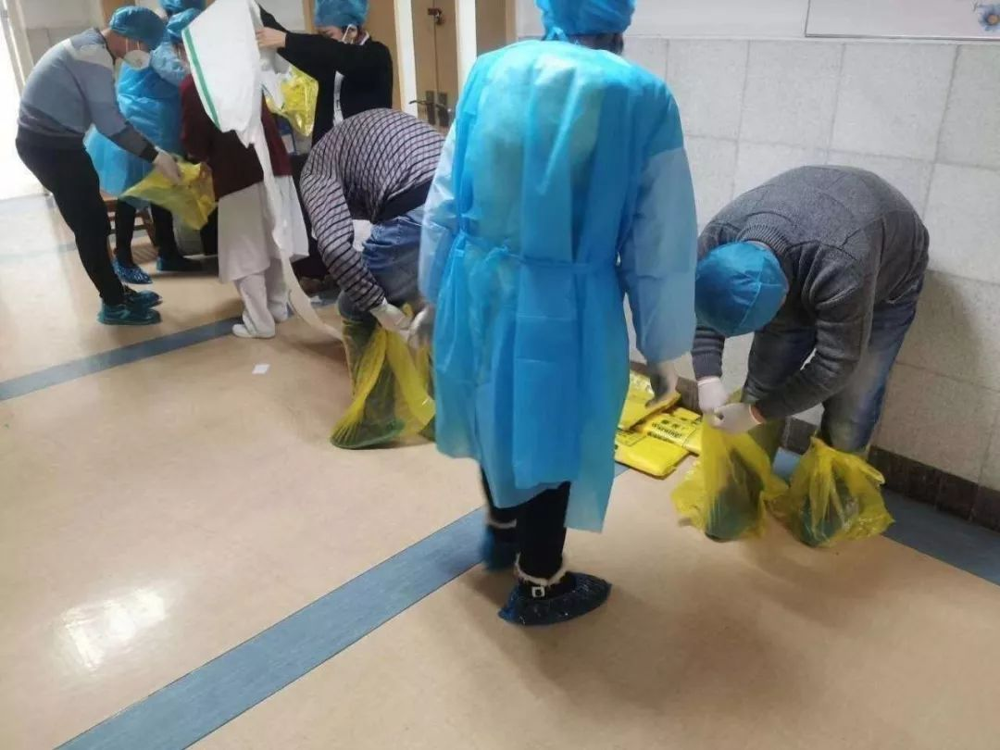
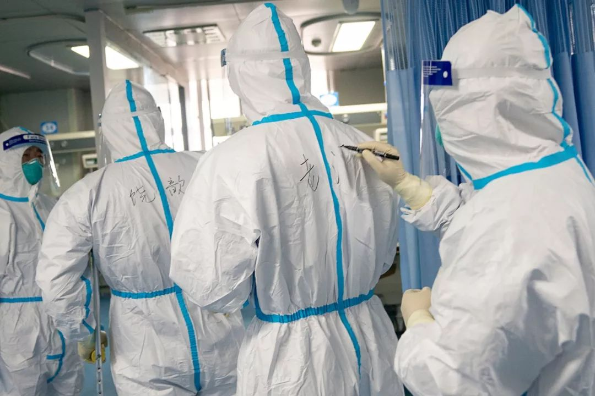

疾病袭城，武汉的医生们正在经历些什么？
原文链接 备份链接 按规定，他们每接一次病人，都要全车消毒、销毁防护服，不然可能会成为新的传染源。但现实情况是，他们全站连一套防护服都没了。除夕夜里两点，他没有睡觉，发了这半年里唯一一条不是关于女儿的朋友圈，是一条物资的求助。他告诉《人 …
武汉第一批七家定点医院医用物资也存在短缺
防疫物资今日抵达汉口，明日有望缓解
本文首发于南方人物周刊
文 | 本刊记者 徐梅 赵蕾 张宇欣
编辑 | 周建平 蒯乐昊
全文约3479字，细读大约需要9分钟

有的市属一级医院由于没有防护服，没有N95口罩，医生只能自己想办法，穿两层蓝色隔离服，戴两层医用口罩，用塑料袋做鞋套
据《湖北日报》消息：1月26日上午，经中央军委批准，联勤保障部队首批防疫物资运抵汉口火车站。国家卫生健康委副主任王贺胜、湖北省卫生健康委主要负责人与军方现场交接。
这批物资包括防护服10000套，医用酒精3750瓶，鞋套10000套等。现场交接完毕后，防疫物资将以最快的速度送往武汉各大医院。
大医院也达不到全套防护

“武汉现在太需要强心剂了！”一位本地记者告诉南方人物周刊，截至1月26日上午，武汉各家医院都有不同程度的物资短缺，“有的市属一级医院由于没有防护服，没有N95口罩，医生只能自己想办法，穿两层蓝色隔离服，戴两层医用口罩，用塑料袋做鞋套。”
相对于其他城市，武汉的医疗资源还是比较丰富的，一般武汉市民口中的“四大家”指的是同济医院、协和医院、省人民医院和中南医院，这些医院又分别有一些分院区，例如刚刚被征用的同济中法新城医院和协和西院。
“四大家”之下，是几家省级医院——湖北省中医院、省新华医院、湖北省三医院（原中山医院）、中部战区医院武昌院区（原陆军总医院）和汉口院区（原解放军一六一医院）。
再往下排是武汉市一级的医院，包括武汉市一医院，二医院，三医院，四医院，五医院，六医院，七医院，八医院，九医院，武昌医院，汉口医院……大大小小有几十所。
随着新冠肺炎疫情升级，武汉市在早期两家定点医院和61家发热门诊的基础上，分批共征用24家综合医院，临时改造成为发热病人收治医院，使收治床位规模逐步达到约一万张。
第一批整体征用的是武汉市汉口医院、武汉市红十字会医院、武汉市普爱医院西院、武汉市七医院、武汉市九医院、武汉市武昌医院和武汉市五医院七家医院。
“第一批七家医院医用物资也存在短缺。最缺的就是口罩，防护服，护目镜，一次性橡胶检查手套。”一位与多家医院有业务往来的材料供应商印证了那位记者的话。包括省人民医院等多家大医院也通过互联网向社会募集物资。
26日早晨，一家三甲医院光谷分院传递到本院的消息令人心酸，一位本院医生一早接到去支援的同事打来电话，告知前方防护服不够，“穿上就八个小时不能吃、不能喝，根本没办法做到每四个小时更换一次。没有护目镜，没有专用防感染口罩，第一天就有放射科医生感染，症状已经高度疑似。”
长期报道本地医卫的跑口记者告诉南方人物周刊，“大医院最一线的隔离病房，病毒浓度最高，防护还是有保障。但是现在要求各科室都上全套防护，这个的确是连大医院都达不到的。”
据了解，协和医院的非一线医护人员也没有配发专业防护服，一位年轻的医生告诉一直通过微信关心自己的亲戚，她平常只能穿一次性手术衣，只有在可能接触高危病人时，才会穿上自己此前网购的防护服。
武汉围城后，各家医院都陆续收到了一些社会捐赠，但是社会捐赠的物资很多达不到医用标准。这些不够标准的防护服、口罩、护目镜也都派上了用场，门诊导医台、服务台，以及一些负责疏导的外围工作人员得到了适度的保护。疫情爆发太快，这几天物资实在紧张，也有些医院整理了社会捐赠物资中相对可用的，发给一线医护应急。
1月24日，联勤保障部队收到武汉市政府有关请求后，第一时间向中央军委报告，并启动应急机制，做好防疫物资的开箱、检验等工作。待中央军委批复后，联勤保障部队又及时优化运输路线，采用军民融合的方式，快速将物资运抵武汉。
“我们相信物资短缺只是暂时的，但是的确盼望调度分发的环节可以更优化一些。”一位医生通过上海的朋友弄到了几千只口罩，那位朋友想办法及时送到了武汉。他盼望今天抵达汉口的物资，可以尽快发放到一线。

1月24日，武汉大学中南医院重症医学科的医护人员在办公室吃年夜饭。当日是中国传统的除夕，武汉大学中南医院重症医学科的医护人员坚守岗位。在病房外的办公室里，他们简单地吃了一顿工作餐，当作年夜饭，随即换装上岗，继续奋战在抗击新型肺炎疫情一线。据悉，武汉地区医疗机构约8万名医务人员，春节期间都坚守岗位 图 / 新华社
小医院面临更大压力
大医院尚且如此，小医院的压力更大了。规模比较小的医院，平常病人不多，急诊病人更少，突然之间推上风口浪尖，医护人员都在艰难应对。
张离（化名）医生26日上午10点跟南方人物周刊记者通话时，告诉我们临床医护人员所需的护目镜依然有缺口，防护服暂时够用，但她不知道够撑几天。
她所在的医院成为第一批定点医院前，除呼吸科外，其他科室都没有防护用具。呼吸科早已“爆满”，走廊放满了加床。
医院腾了一层楼专门收治呼吸科病人。张离和同事每天都穿着普通的医护服、戴着普通医用口罩到病房，每天三班倒（白班早上8点到下午5点半；中班下午5点半到凌晨1点半；夜班凌晨1点半到早上8点）。
1月中旬，张离和同事们收到了医院通知，要求做好对新型肺炎的防护工作。而通过抽血和CT检查，她所在的科室负责的病房已有三例疑似病人。张离和同事们早在十余天前向医院申请防护用具，但医院没有多余物资可发。
23日，全院职工都做了抽血和肺部CT检查，检验结果有疑者都需在家隔离，结果他们科就查出共五名医护人员结果有异。
25岁的王晓（化名）是中南医院某科室的护士，她是被借调到武汉市第七人民医院的。1月22日，武汉市同济医院、协和医院和中南医院在武汉市第七人民医院联合设立了发热门诊。
此前，她和其他五名同事在本院接受了感染科护士长的培训。1月23日早上8点，王晓开始在七医院发热门诊化验科负责抽血，第七人民医院比较简陋，没有医护人员专用通道，穿防护服的医生在人满为患的医院里挤进挤出，通常护目镜上都是雾气，只能通过在防护服上写名字相互辨认。
医院防护服始终紧缺，一线医护人员的防护服不能保证四小时更换一轮，而是从上班穿戴到下班才脱。普通接诊的医护人员每人一天只发两个医用外科口罩。在重症隔离区，王晓看到医生全天戴一个N95口罩，口罩通常半个小时就湿透了，“他们也没时间摘了换”。

1月24日，在武汉大学中南医院重症隔离病房，医护人员在隔离服上写下名字，方便辨认 图 / 新华社
医护人员的心理疏导需引起重视
病人陡增，产生的医疗污染物量也很大，“人手不够，也没有办法及时处理。”一位医生告诉我们。
医护人群每天面对着繁重复杂的防疫工作，满负荷运转，心理压力也在所难免。张平（化名）曾经跟几个护士姐妹互相安慰，张平说，医护面临的困难显而易见，是大家都知道的，“再多说没有意义。”
张平所在的那家医院，很早就有医生在群里讨论新型肺炎的病例不太寻常，呼吸科感染科医生最开始是有警惕的，他们在群里给同事们做了一些科普。
抗击新型肺炎的上岗医护人员实行轮班制，一旦上岗就是15天，每四个小时一班，因为防护装备不够，再加上一旦上岗病人也确实很多，医生常常忙到不能吃、不能喝、不能上厕所。
15天值班结束后，还要隔离观察15天。这样一来，一线医护每轮就至少一个月的时间不能与家人见面。“有的医护自己已经流感，但是拍片肺部没有问题不能诊断是新型肺炎，就不让请假。”
第一批物资到汉之后，张平的朋友感慨接下来应更多关心一线医护的心理健康，“特殊时期，每个医院都是全员待命。每天都要面对心急如焚的病患。虽然是医务工作者，他们大多也是人生第一次亲历这种未可知的传染性疫情，他们也会害怕，也有担心，可是时间不等人，来不及等他们做好心理建设，医疗工作者就要一头扎进一线。”
随着外地医疗援助队的进驻，各医院都将得到不同程度的人力增补支援。有关方面正在积极落实将外援医疗人员、物资下沉到力量薄弱的医院。
新冠肺炎专题：


征集疫区真实故事，记录我们的命运
《南方人物周刊》现面向所有新冠肺炎一线的读者征稿，写下你正在经历或亲眼所见的故事。如果你是一线医护人员或其家属，疫区公共服务人员，病患本人或家属，专业人士等等，如果你有故事、有困难、有建言，请让我们知道。我们也同时征集采访对象和新闻线索，留下你的联系方式，我们的记者会同您联系。我们会充分保护受访者的隐私。
隔离疫情，但不隔离爱。写出你的真实故事，你的困境和希望，记录我们共同的命运，围城内外携手共度。
此次征稿形式不限：文字（2000字左右）、图片（原创拍摄）、音频视频（原创录制）
祝愿所有在疫区和不在疫区的朋友们，新春快乐，平安健康。
投稿方式：
1、记者热线（同微信）：13918532564、13631483936
2、《南方人物周刊》微信公号投稿邮箱：wuhantingzhu@126.com
3、《南方人物周刊》官方微博讨论话题：#我在疫区有话说#
注：请务必保证投稿内容的真实、客观、理性，不造谣，不传谣。
原文链接 备份链接 按规定，他们每接一次病人，都要全车消毒、销毁防护服，不然可能会成为新的传染源。但现实情况是，他们全站连一套防护服都没了。除夕夜里两点，他没有睡觉，发了这半年里唯一一条不是关于女儿的朋友圈，是一条物资的求助。他告诉《人 …
原文链接 备份链接 *************▲************* 大批量新国标标准的口罩正进入嘉兴“心脏仓” 。 （新华社/阿里巴巴供图/图） 全文共*4420*字，阅读大约需要*10*分钟。 “缺口以万为单位”，武汉市汉口医 …
原文链接 备份链接 今天，湖北省武汉市红十字会向武汉市中心医院提供了医用外科口罩4000个、医用防护服600套；向武汉市洪山区中医医院提供了医用防护服400套，84消毒液10箱，医用口罩5箱。武汉红十字会表示，接收的所有物资都将被送往一线 …
原文链接 备份链接 各方资源和关注的焦点是武汉，但在周边16座也因疫情而被封闭的城市里，他们正在经历着什么 文 |《财经》记者 房宫一柳 宋玮 黎诗韵 管艺雯 陈晶 余洋洋 实习生 马可欣 张凡 编辑 | 宋玮 1月24日，农历鼠年除夕 …
原文链接 备份链接 武汉140公里以外：一天隔离50人，除夕夜接诊护士没有防护服丨武汉肺炎亲历 2020-01-25 22:47 作者：李静 来源：中国经营网 本报记者 李静 湖北广水报道 一天之内隔离50人，这对于广水市第一人民医院院办 …